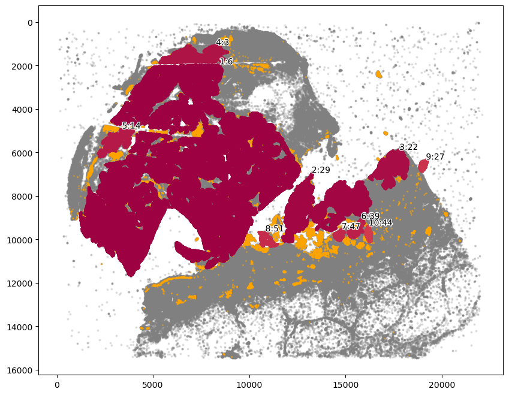
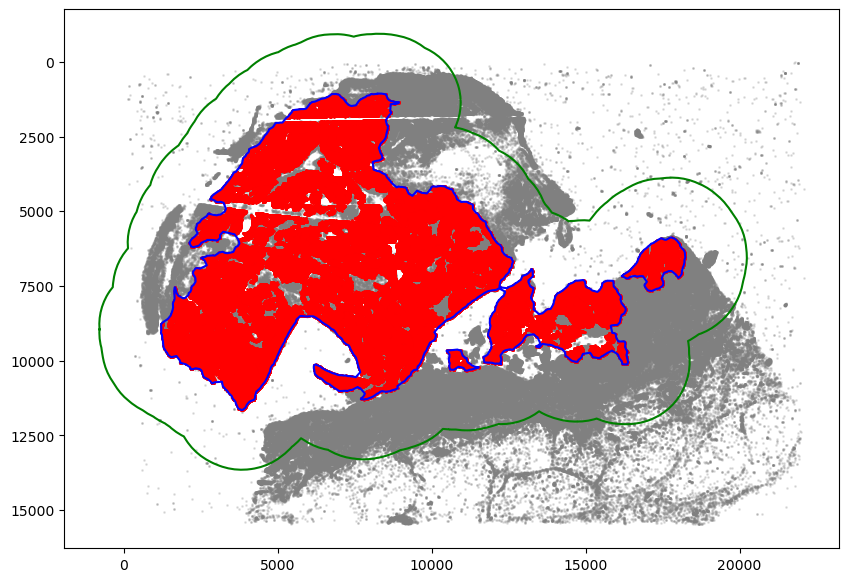
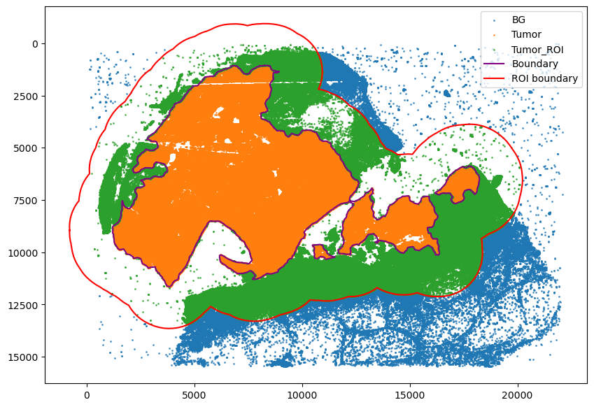
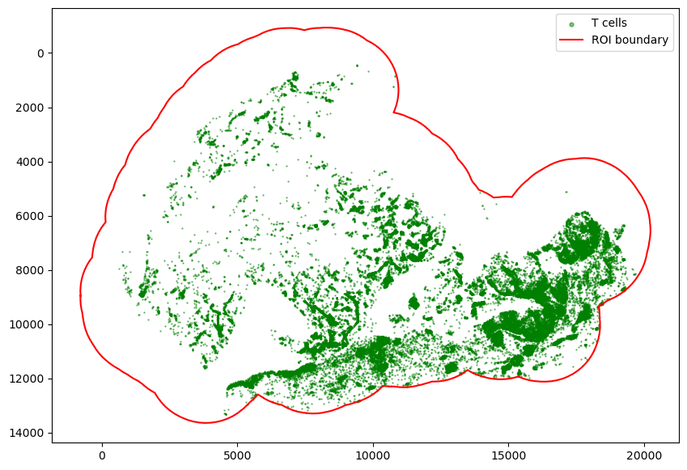
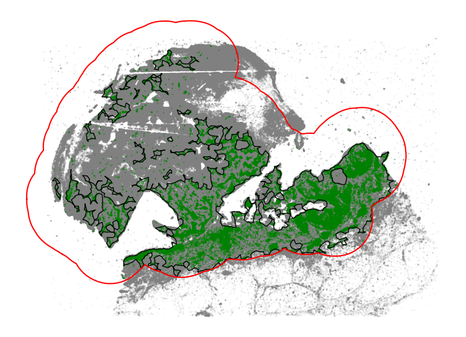
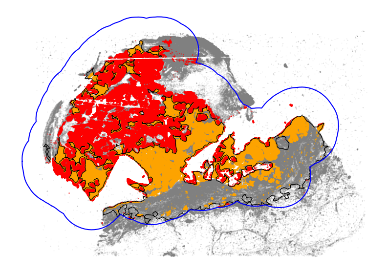
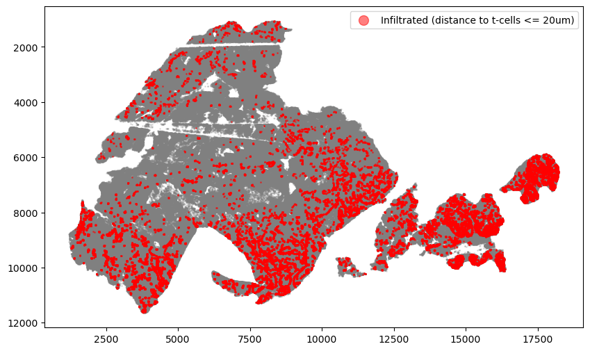

3: Immune Infiltration Overlap Analysis¶
Demonstrate the usage of SpatialCells to analyse Immune cell infiltration into the tumor region
@author: Guihong Wan and Boshen Yan
@date: Sept 8, 2023
@last updated: Oct 6, 2023
[1]:
import numpy as np
import pandas as pd
import matplotlib.pyplot as plt
import seaborn as sns
import anndata as ad
import shapely
import statistics
import spatialcells as spc
Read and preprocess data
[2]:
adata = ad.read("../../../Cycif/unmicst-1_750_PCA_Mel1.h5ad")
spc.prep.setGate(adata, "KERATIN_cellRingMask", 6.4, debug=True)
spc.prep.setGate(adata, "CD3D_cellRingMask", 7, debug=True)
spc.prep.setGate(adata, "KI67_cellRingMask", 6.7, debug=True)
spc.prep.setGate(adata, "PCNA_cellRingMask", 7.3, debug=True)
KERATIN_cellRingMask_positive
False 1067400
True 43185
Name: count, dtype: int64
CD3D_cellRingMask_positive
False 1038559
True 72026
Name: count, dtype: int64
KI67_cellRingMask_positive
False 1025315
True 85270
Name: count, dtype: int64
PCNA_cellRingMask_positive
False 896678
True 213907
Name: count, dtype: int64
Isolate tumor cell communities and draw region boundary as before
[3]:
marker = ["SOX10_positive"]
communitycolumn = "COI_community"
ret = spc.spatial.getCommunities(adata, marker, eps=60, newcolumn=communitycolumn)
fig, ax = plt.subplots(figsize=(10, 8))
spc.plt.plotCommunities(
adata, ret, communitycolumn, plot_first_n_clusters=10, s=2, fontsize=10, ax=ax
)
ax.invert_yaxis()
plt.show()

[4]:
communityIndexList = [6, 3, 14, 51, 29, 47, 39, 44, 22]
boundary = spc.spatial.getBoundary(
adata, communitycolumn, communityIndexList, alpha=130
)
boundary = spc.spa.pruneSmallComponents(boundary, min_edges=50, holes_min_edges=500)
roi_boundary = spc.spa.getExtendedBoundary(boundary, offset=2000)
markersize = 1
fig, ax = plt.subplots(figsize=(10, 7))
## all points
ax.scatter(
*zip(*adata.obs[["X_centroid", "Y_centroid"]].to_numpy()),
s=markersize,
color="grey",
alpha=0.2
)
# Points in selected commnities
xy = adata.obs[adata.obs[communitycolumn].isin(communityIndexList)][
["X_centroid", "Y_centroid"]
].to_numpy()
ax.scatter(xy[:, 0], xy[:, 1], s=markersize, color="r")
# Bounds of points in selected commnities
spc.plt.plotBoundary(boundary, ax=ax, label="Boundary", color="b")
spc.plt.plotBoundary(roi_boundary, ax=ax, label="ROI boundary", color="g")
ax.invert_yaxis()
plt.show()

Assign cells to tumor region
[5]:
spc.spatial.assignPointsToRegions(
adata,
[boundary, roi_boundary],
["Tumor", "Tumor_ROI"],
assigncolumn="region",
default="BG",
)
point_size = 1
fig, ax = plt.subplots(figsize=(10, 7))
for region in sorted(set(adata.obs["region"])):
tmp = adata.obs[adata.obs.region == region]
ax.scatter(
*zip(*tmp[["X_centroid", "Y_centroid"]].to_numpy()),
s=point_size,
alpha=0.7,
label=region
)
# Bounds of points in selected commnities
spc.plt.plotBoundary(boundary, ax=ax, label="Boundary", color="purple")
spc.plt.plotBoundary(roi_boundary, ax=ax, label="ROI boundary", color="r")
plt.legend(loc="upper right")
ax.invert_yaxis()
plt.show()
955899it [01:36, 9950.30it/s]
Assigned points to region: Tumor
403552it [00:10, 37077.35it/s]
Assigned points to region: Tumor_ROI

Generalize cell-types based on existing phenotypes
[6]:
def merge_pheno(row):
if row["phenotype_large_cohort"] in [
"T cells",
"Cytotoxic T cells",
"Exhausted T cells",
]:
return "T cells"
elif row["phenotype_large_cohort"] in ["Melanocytes"]:
return "Tumor cells"
else:
return "Other cells"
def cell_type(row):
if row["SOX10_positive"]:
return "SOX10+"
elif row["CD3D_cellRingMask_positive"]:
return "CD3D+"
else:
return "Other cells"
# Applying the function to create the new columns
adata.obs["pheno1"] = pd.Categorical(adata.obs.apply(merge_pheno, axis=1))
adata.obs["Cell Types"] = pd.Categorical(adata.obs.apply(cell_type, axis=1))
[7]:
spc.msmt.getRegionComposition(adata, "pheno1")
[7]:
| pheno1 | cell_count | composition | |
|---|---|---|---|
| 0 | Tumor cells | 524293 | 0.472087 |
| 1 | Other cells | 516082 | 0.464694 |
| 2 | T cells | 70210 | 0.063219 |
Find immune cell infiltrated areas in the tumor ROI region
[8]:
melano = adata[
(adata.obs.SOX10_positive) & (adata.obs.region.isin(["Tumor_ROI", "Tumor"]))
]
tcells = adata[
(adata.obs.CD3D_cellRingMask_positive)
& (adata.obs.region.isin(["Tumor_ROI", "Tumor"]))
]
fig, ax = plt.subplots(figsize=(10, 7))
ax.invert_yaxis()
ax.set_aspect("equal")
plt.scatter(
tcells.obs["X_centroid"],
tcells.obs["Y_centroid"],
s=0.5,
label="T cells",
color="green",
alpha=0.5,
)
spc.plt.plotBoundary(roi_boundary, ax=ax, label="ROI boundary", color="r")
plt.legend(loc="upper right", markerscale=5)
plt.show()

[9]:
communitycolumn = "CD3D_cellRingMask_positive"
communityIndexList = [True]
tumor = adata[adata.obs.region.isin(["Tumor_ROI", "Tumor"])]
immune_boundary = spc.spatial.getBoundary(
tumor, communitycolumn, communityIndexList, alpha=130
)
immune_boundary = spc.spa.pruneSmallComponents(
immune_boundary, min_edges=25, holes_min_edges=30, min_area=30000
)
markersize = 0.1
fig, ax = plt.subplots(figsize=(10, 7))
ax.scatter(
*zip(*adata.obs[["X_centroid", "Y_centroid"]].to_numpy()),
s=markersize,
color="grey",
alpha=0.2
)
## all points
ax.scatter(
*zip(*tumor.obs[["X_centroid", "Y_centroid"]].to_numpy()),
s=markersize,
color="grey",
alpha=0.2
)
# Points in selected commnities
xy = tumor.obs[tumor.obs[communitycolumn].isin(communityIndexList)][
["X_centroid", "Y_centroid"]
].to_numpy()
ax.scatter(xy[:, 0], xy[:, 1], s=markersize, color="green", alpha=1, label="T cells")
# Bounds of points in selected commnities
spc.plt.plotBoundary(
immune_boundary, ax=ax, label="Immune Cell Region Boundary", color="k", linewidth=1
)
spc.plt.plotBoundary(roi_boundary, ax=ax, label="ROI boundary", color="r")
# ax.set_xlim(0, 20000)
# ax.set_ylim(0, 13000)
ax.invert_yaxis()
ax.set_aspect("equal")
ax.set_axis_off()
# plt.legend(loc="upper right", markerscale=5, fontsize=13.5)
# plt.savefig("immune_cell_region1.png", dpi=400)
plt.show()
spc.spatial.assignPointsToRegions(
melano, [immune_boundary], ["T"], assigncolumn="tumor_isolated_region", default="F"
)

/Users/boshenyan/anaconda3/envs/spatial-cells/lib/python3.10/site-packages/spatialcells/spatial/_assignPointsToRegions.py:56: ImplicitModificationWarning: Trying to modify attribute `.obs` of view, initializing view as actual.
anndata.obs[assigncolumn] = default
543014it [04:14, 2134.53it/s]
Assigned points to region: T
We can estimate the scale of immune infiltration by overlapping the identified immune infiltrated regions with all tumor cells
[10]:
point_size = 0.5
fig, ax = plt.subplots(figsize=(10, 7))
ax.scatter(
*zip(*adata.obs[["X_centroid", "Y_centroid"]].to_numpy()),
s=markersize,
color="grey",
alpha=0.2
)
colors = ["red", "orange"]
labels = ["Immune-isolated Tumor Cells", "Immune-rich Tumor Cells"]
for i, region in enumerate(sorted(set(melano.obs["tumor_isolated_region"]))):
tmp = melano.obs[melano.obs.tumor_isolated_region == region]
ax.scatter(
*zip(*tmp[["X_centroid", "Y_centroid"]].to_numpy()),
s=point_size,
alpha=0.5,
color=colors[i],
label=labels[i]
)
# Bounds of points in selected commnities
spc.plt.plotBoundary(
immune_boundary, ax=ax, label="Immune Cell Region Boundary", color="k", linewidth=1
)
spc.plt.plotBoundary(roi_boundary, ax=ax, label="ROI boundary", color="b")
ax.invert_yaxis()
ax.set_axis_off()
# plt.savefig("roi_region1.png", dpi=400)
plt.show()

[11]:
print("Percentage of tumor cells in immune-isolated regions: ")
melano.obs["tumor_isolated_region"].value_counts() / len(melano.obs)
Percentage of tumor cells in immune-isolated regions:
[11]:
tumor_isolated_region
F 0.580213
T 0.419787
Name: count, dtype: float64
We can also look at the scale of immune infiltration by comparing the area overlap between tumor regions and immune cell regions
[12]:
roi_area = spc.msmt.getRegionArea(roi_boundary)
tumor_area = spc.msmt.getRegionArea(boundary)
immune_area = spc.msmt.getRegionArea(immune_boundary)
tumor_immune_overlap = boundary.intersection(immune_boundary)
overlap_area = spc.msmt.getRegionArea(tumor_immune_overlap)
print(f"Area of ROI: {roi_area:.2f}")
print(f"Area of main tumor cell region: {tumor_area:.2f}")
print(f"Area of immune cell region: {immune_area}")
print(f"Area of overlap between tumor and immune cell regions: {overlap_area:.2f}")
print(
f"Percentage of tumor region that has overlap with "
f"immune cell region: {overlap_area / tumor_area:.3f}"
)
Area of ROI: 202741300.25
Area of main tumor cell region: 77493721.80
Area of immune cell region: 58152303.471073814
Area of overlap between tumor and immune cell regions: 29934754.20
Percentage of tumor region that has overlap with immune cell region: 0.386
Identify tumor cells that are adjacent to (>=20um) immune cells
[13]:
melano = adata[
(adata.obs.SOX10_positive) & (adata.obs.region.isin(["Tumor_ROI", "Tumor"]))
]
tcells = adata[
(adata.obs.CD3D_cellRingMask_positive)
& (adata.obs.region.isin(["Tumor_ROI", "Tumor"]))
]
dists = spc.msmt.getMinCellTypesDistance(melano, tcells)
adata.obs.loc[
(adata.obs.SOX10_positive) & (adata.obs.region.isin(["Tumor_ROI", "Tumor"])), "dist"
] = dists
[14]:
threshold = 20
adata.obs["dist_binned"] = adata.obs["dist"] <= threshold
infiltrated = adata.obs[
(adata.obs.SOX10_positive)
& (adata.obs.region == "Tumor")
& (adata.obs.dist_binned == True)
]
non_infiltrated = adata.obs[
(adata.obs.SOX10_positive)
& (adata.obs.region == "Tumor")
& (adata.obs.dist_binned == False)
]
fig, ax = plt.subplots(figsize=(10, 6))
ax.invert_yaxis()
region = adata.obs[(adata.obs.region == "Tumor")]
plt.scatter(region["X_centroid"], region["Y_centroid"], s=1, alpha=0.2, color="grey")
plt.scatter(
infiltrated["X_centroid"],
infiltrated["Y_centroid"],
s=1,
alpha=0.5,
color="red",
label=f"Infiltrated (distance to t-cells <= {threshold}um)",
)
plt.legend(markerscale=10)
plt.show()

[ ]: